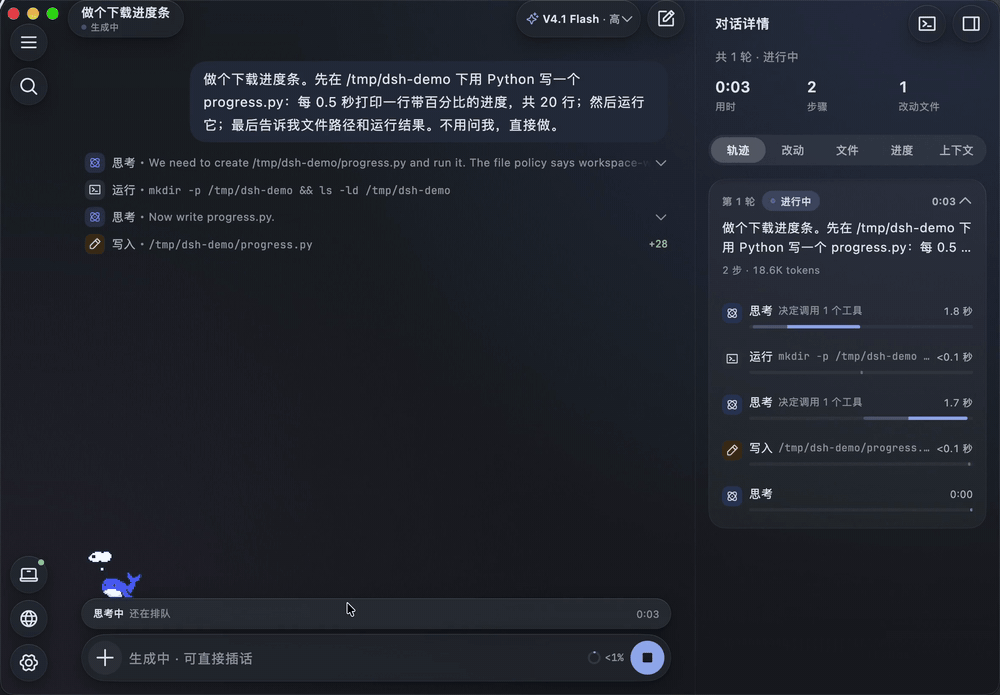
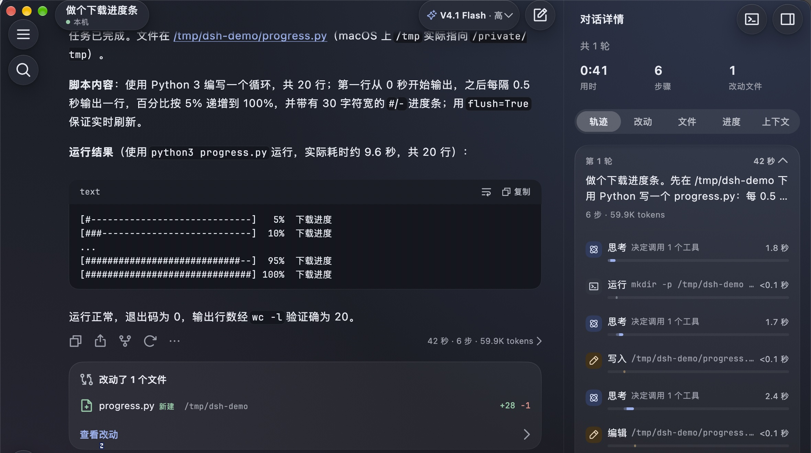
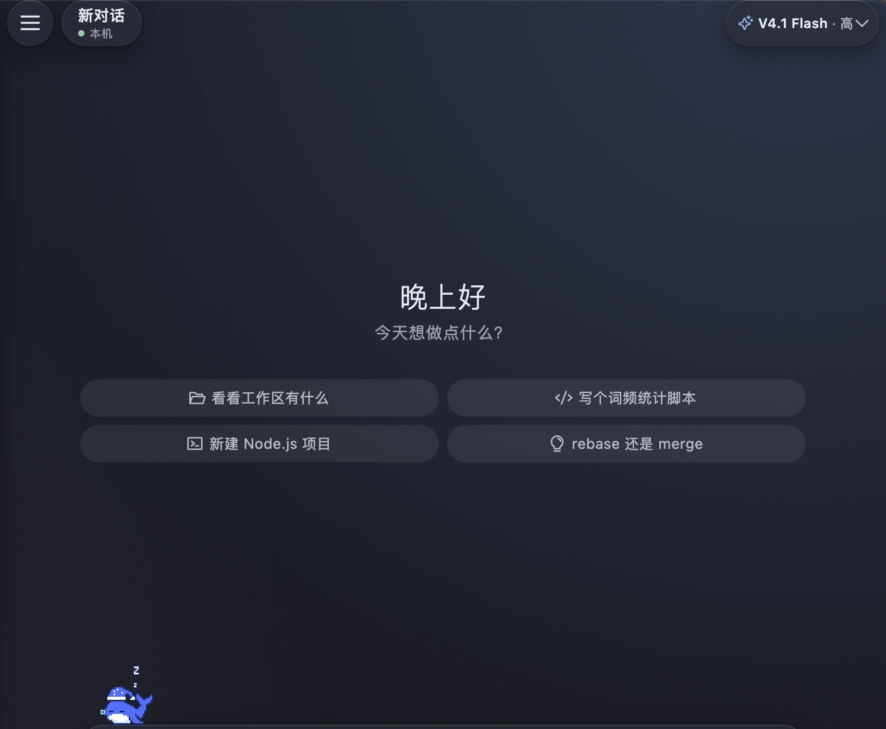

思考、建目录、写文件、运行。一个真实的工具调用回合。
DSH GO MAC — MACOS CLIENT / 001
DeepSeek Harness 的第二个 macOS 客户端。同一个引擎，零迁移。它把一轮任务的全貌摆在你面前，而不是折进聊天记录。
一个需要工具调用的真实任务，和它跑完之后留下的东西。录屏没有剪辑，截图没有摆拍。

思考、建目录、写文件、运行。一个真实的工具调用回合。

右侧不是装饰：用时、步骤、改动文件，全部来自这次运行。

它先是一个安静的 macOS 客户端，然后才是运行详情。
一轮任务结束，三个数先给你：用时、步骤、改动文件。下面五个页签：轨迹、改动、文件、进度、上下文。点「改动」就是 diff，点「轨迹」回看每一步。
它不替换你的引擎。首次启动检测本机官方 DSH，连上后读的还是同一个 ~/.dsh。
不迁移、不复制。读的还是 ~/.dsh，官方客户端随时可以继续用。
Flutter 界面、Swift 平台层、原生 Node 引擎。没有 Electron，没有内嵌浏览器。
一轮结束、等待确认，系统通知上直接「允许 / 拒绝」，点一下回到对话。不是网页里的按钮。
+打开、另存、PDFKit 预览、SFSpeechRecognizer 语音、无边框桌宠浮窗，全走 macOS API。
+思考胶囊呼吸、工具行滑入、折叠连续展开。长任务里，扫一眼就知道状态。
+$ brew install --cask BillWGong/tap/dsh-go-mac
# 或下载 DMG（Apple Silicon / macOS 12+）
$ open https://github.com/BillWGong/dsh-go-mac/releases/latest
# 未签名构建被 Gatekeeper 拦住时
$ xattr -dr com.apple.quarantine "/Applications/DSH Go Mac.app"~/.dsh。这个仓库只是移植。没有 ccch1mneyyy 的 DSH Go，就没有 DSH Go Mac。
github.com/ccch1mneyyy/dsh-go →